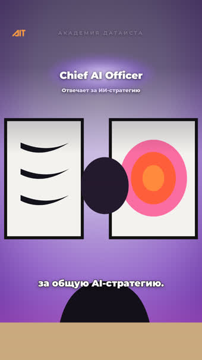
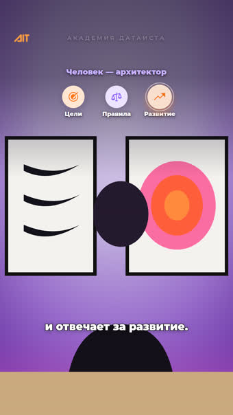
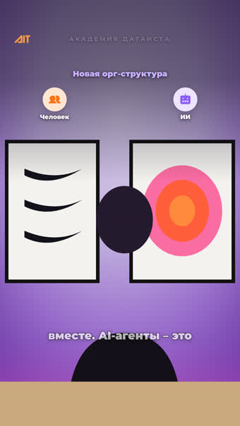

+
Новый ролик


| Правило | Значение | Откуда | Проверяется |
|---|---|---|---|
| Зона графики | 238…630 | замер: верх картин y638 | |
| Минимальный кегль | 24 px | правило подачи №3 | |
| Зазор между подписями | 18 px | «Поддерживающие» и «Управленческие» слиплись | |
| Пара: центры кружков | 246 · 834 | «иконки, когда их две, — как процессы / структура» | |
| Значков в разлёте | 4 | ролик 7: «эмодзи добавь вылетающие» | |
| Пустой кадр между сценами | запрещён | «надо чтобы оставалась, пока не появляется новая» | |
| Полоса строки субтитров | 940 px | «субтитры друг на друга накладывались» | |
| Слов в реплике | не больше 4 | «субтитры по два слова мелькают» | |
| Кегль вжжённых субтитров | × 1.562 | замер: libass читает Fontsize как высоту строки | |
| Хвост слоя за дорожкой | 1.5 c | замер: шапка держится до конца дубля | |
| Крупных слов в ролике | по числу блоков | «крупное слово — только опорный блок» |